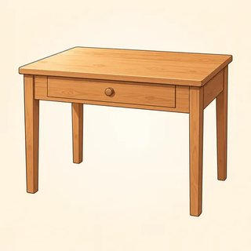

The Test & Foundations — Classroom Materials
Everything to print for Classes C1–C4: flashcards (feelings and test-day pictures, test vocabulary, topic pictures, AWL word families, complex-sentence frames, the band-limiting seven), new identity cards, the C1 icebreaker and speaking-sample interviewer card, the C2 format information-gap and Myth or Fact? cards, the C3 Paraphrase Relay and No-Echo cards, the C4 Part 3 frame cards with observer tallies, Paraphrase Bingo, and the teacher's listening and dictation scripts. All texts, prompts and questions are original.
What to Print
| Set | What | How many | Used in |
|---|---|---|---|
| A | Flashcards: feelings and test-day pictures, test vocabulary, topic pictures, AWL word families, complex-sentence frames, the band-limiting seven | 1 set for the board | C1–C4 |
| B | New identity cards (6 candidate profiles) | 1–2 sets, on a side table | C1–C4 |
| C | Find Someone Who (icebreaker) + speaking-sample interviewer card | 1 sheet per learner · 1 interviewer card (+1 per pair if learners record at home) | C1 |
| D | Format information-gap cards (A/B) + Myth or Fact? cards (12) | 1 A/B pair per two learners · 1 set of 12 per group of 3 | C2 (Myth or Fact? again in the C3 warmer) |
| E | Paraphrase Relay prompt cards (8) + No-Echo examiner cards (2) | 1 set per pair | C3 |
| F | Part 3 frame cards (6) + observer tally | 1 set per group of 3 · 1 tally per learner | C4 |
| G | Game: Paraphrase Bingo (cards A and B + caller list) | 1 card per learner, A and B alternated | C4 warmer · early finishers · C5 warmer |
| H | Listening & dictation scripts | Teacher only | C2, C3, C4 |
A · Flashcards — Feelings, Test Day & Test Vocabulary (C1–C2)
The four feelings cards go on the flipchart in C1 for the anonymous sticky-dot check-in; bring them back before Practice Test 1 (C8). The test-day cards are for C2 (strategy stage): the ID you registered with, and a pencil for the paper test. Rules on what else to bring vary by center, so don't add a list. The test vocabulary cards (blue) go on the board during C2 and stay up all module.


A · Flashcards — Topic Pictures & Word Families (C3)
The topic pictures start the topic-bank stage in C3: hold one up and ask for three collocations (school → higher education, tuition fees, academic performance). The purple word-family cards are for the family ping-pong drill: read the root and the class, learners say the form with the right stress. Red tops mark the pairs learners confuse most.



A · Flashcards — Complex Frames & the Band-Limiting Seven (C4)
Blue frame cards are for the "Frame it" drill: hold one up with a topic and ask for a sentence. Amber band-limiting seven cards go on the wall for the Grammar Upgrade workshop: when a group finds an error, they name the card.
B · New Identity Cards (C1–C4)
Any learner may use a card instead of their own life, in any task: no reason needed. In C1 the card fills the My target page; in C2 it drives the study-plan interview; in C3 the hometown answers No-Echo questions; in C4 the card's opinion can feed the Part 3 answer. All details are invented.
Lina — pharmacy graduate
Needs IELTS for: professional registration · overall 7.0, no band below 7.0 · test in 12 weeks
Diagnostic: about 6.5 overall · weakest: Writing (6.0)
Hometown: a small coastal town famous for its fish market
An opinion: "Cities should spend more on parks than on new roads."
Joon — civil engineer
Needs IELTS for: a master's degree · overall 7.0, no band below 6.5 · test in 10 weeks
Diagnostic: about 6.0 overall · strongest: Reading · weakest: Writing, then Speaking
Hometown: a busy city with a new subway line
An opinion: "Public transport should be free for students."
Ana — nurse
Needs IELTS for: professional registration · 7.0 in every skill · test in 16 weeks
Diagnostic: about 6.5 overall · weakest: Reading (runs out of time)
Hometown: a mountain village with one bus a day
An opinion: "Schools should teach cooking as a main subject."
Omar — software tester
Needs IELTS for: a job application · overall 6.5 · test in 8 weeks
Diagnostic: about 6.0 overall · strongest: Listening · weakest: Writing Task 1
Hometown: a university town full of bicycles
An opinion: "Working from home is better for most office workers."
Mei — business student
Needs IELTS for: an undergraduate program · overall 6.0, no band below 5.5 · test in 9 weeks
Diagnostic: about 5.5 overall · weakest: Speaking (nervous, short answers)
Hometown: a large port city with a famous night market
An opinion: "Children spend too much time on screens."
Daniel — secondary-school teacher
Needs IELTS for: teacher registration · overall 7.5, no band below 7.0 · test in 14 weeks
Diagnostic: about 7.0 overall · weakest: Writing accuracy (articles)
Hometown: a quiet farming region with long winters
An opinion: "Museums should be free for everyone."
C · Find Someone Who (C1 icebreaker)
One sheet per learner. Mingle for 5 minutes. Write a name only once. Anyone can say "Pass" to any question, no reason needed. Ask one more question to get the detail.
| Find someone who… | Name | One more detail |
|---|---|---|
| has taken a test on a computer (any test) | ||
| reads something in English every day (a message counts!) | ||
| prefers studying in the morning | ||
| has used a phone app to learn new words | ||
| enjoys writing more than speaking | ||
| has listened to a podcast in English this month | ||
| already knows the exact band they need | ||
| has studied a language other than English | ||
| has a tip for staying calm before a test | ||
| walks or cycles to class |
C · Speaking-Sample Interviewer Card (C1)
How to run the diagnostic speaking sample
- Say: "This is a short practice conversation, about three minutes. There are no right or wrong answers. I'd just like to hear you speak."
- Use the questions on the Speaking page of the diagnostic paper (
assessment/diagnostic.html), in order. About one minute of familiar questions, then the longer question. - Neutral follow-ups only: "Why?" · "Can you give me an example?" · "Tell me a little more." Don't correct, don't nod "yes" to every answer, don't finish sentences.
- If the learner freezes: wait five seconds, then repeat the question once, more slowly. Then move on: "That's fine. Let's try another one."
- At three minutes: "Thank you. That's all." Smile. The learner goes back to the writing sample and gets the missed minutes.
- After the learner leaves (never in front of them), note one or two words for each area: Fluency & Coherence · Lexical Resource · Grammatical Range & Accuracy · Pronunciation. Estimate a band range with the paraphrased criteria in
assessment/answer-keys.html.
At home option: a friend or family member reads the questions, or the learner reads each question aloud and then answers. Record on a phone and bring it to class.
D · Format Information Gap — A/B Cards (C2)
One A/B pair per two learners. A has the facts for Listening and Writing; B for Reading and Speaking. They ask and answer to complete Workbook 1.1, Exercise 2. No showing cards.
You know about Listening and Writing
Listening: about 30 minutes · 4 recordings (conversations and talks) · 40 questions · you hear each recording once · on paper there is extra time at the end to copy answers · spelling counts.
Writing: 60 minutes · 2 tasks · Task 1: describe a graph, chart, table, map or process in 150+ words (about 20 min) · Task 2: an essay of 250+ words (about 40 min) · Task 2 counts twice as much · too few words lose marks.
Ask B about: Reading and Speaking: How long? How many parts or questions? What do you do? Any warning?
You know about Reading and Speaking
Reading: 60 minutes · 3 long academic passages · 40 questions · many question types · no extra time to copy answers · plan about 20 minutes per passage.
Speaking: 11–14 minutes · 3 parts: Part 1 interview about familiar topics · Part 2 a talk from a cue card (1 minute to prepare, up to 2 minutes to speak) · Part 3 a discussion of more abstract questions · always with a real examiner · don't memorize answers.
Ask A about: Listening and Writing: How long? How many parts or questions? What do you do? Any warning?
D · Myth or Fact? Cards (C2)
One set of 12 per group of 3. Groups sort into MYTH / FACT / NOT SURE. The small gray answer on each card is for you: fold it back or cut it off before class. The full explanations are in the Module 1 answer key.
IELTS is pass or fail.
A wrong answer in Listening or Reading loses you a mark.
Spelling counts in Listening and Reading answers.
The computer test is easier than the paper test.
Writing Task 2 is worth more than Task 1.
If you write fewer than 150 / 250 words, you can lose marks.
You need a British or American accent to get a high Speaking band.
Memorized answers are a good way to get a high Speaking band.
Using as many long, rare words as possible raises your band.
The examiner gives marks for having the "right" opinion in Task 2.
The overall band is the average of the four skills, rounded to the nearest half band.
A hyphenated word such as "well-known" counts as one word.
E · Paraphrase Relay — Prompt Cards (C3)
One set per pair. A reads the prompt aloud; B has 30 seconds, then restates it in one or two sentences. A checks the three don't repeat words. All prompts are original and written for this course. The gray model is for you: fold it back before class.
Cycle lanes
"Some people think that city streets should give more space to bicycles, even if this means less space for cars. To what extent do you agree or disagree?"
Don't repeat: streets · space · cars
School gardens
"Many schools now have a vegetable garden. Some people believe every school should have one. Do the advantages outweigh the disadvantages?"
Don't repeat: schools · garden · every
Online degrees
"Some people believe that a degree completed entirely online is as valuable as a degree from a traditional university. To what extent do you agree or disagree?"
Don't repeat: degree · online · valuable
The four-day week
"A number of companies are trying a four-day working week. What are the benefits and drawbacks of this for employees and employers?"
Don't repeat: companies · four-day · benefits
Museum fees
"Some people think that public museums should be free for everyone to visit. To what extent do you agree or disagree?"
Don't repeat: museums · free · visit
Screen time
"Children today spend more time on screens than ever before. What problems does this cause, and what can be done about them?"
Don't repeat: children · screens · problems
Shared workspaces
"More and more people work in shared offices instead of at home or in a company building. Why is this happening? Is it a positive development?"
Don't repeat: people · shared · offices
Car-free weekends
"Some cities have closed their centers to cars on weekends. Do the advantages of this outweigh the disadvantages?"
Don't repeat: cities · centers · cars
E · No-Echo Examiner Cards (C3)
A is the examiner. B answers in 2–3 sentences without repeating the question's key words. A taps the table once for each echo. A new identity card's hometown is always fine.
Part 1 questions
- Do you work, or are you a student?
- What do you like most about your job or your studies?
- Do you enjoy cooking?
- How often do you use public transport?
- Do you prefer to study in the morning or in the evening?
Part 1 questions
- Tell me about the town or city where you live (or the one on your card).
- Is it a good place for young people?
- Do you like reading?
- Which apps do you use most on your phone?
- Would you like to change your daily routine in the future?
F · Part 3 Frame Cards & Observer Tally (C4)
Groups of 3. A asks the question; B answers for about 45 seconds using both frames on the card; C fills in the observer tally. Rotate roles. The opinion on a new identity card can be used.
Why do some people prefer to study online rather than in a classroom?
Use: Although…, … · …, which means that…
How has technology changed the way people shop?
Use: far more… than… · What is clear is that…
Should cities spend more on parks or on public transport?
Use: If…, … would… · Although…, …
What are the advantages of learning a new skill as an adult?
Use: People who… · The fact that…
Why do many young people move to big cities?
Use: I'd say the main reason is that… · …, which…
Will people work fewer hours in the future?
Use: If…, … will… · Not only… but also…
| Observer tally · Speaker: ______________ | ✔ heard | Example (quote a few words) |
|---|---|---|
| Frame 1 from the card | ||
| Frame 2 from the card | ||
| Another complex structure (relative, conditional, comparison…) | ||
| An error that made the meaning unclear (only these!) | ||
| One strength · one suggestion | ||
G · Game: Paraphrase Bingo (C4 warmer)
Give out cards A and B alternately. Read the everyday words from the caller list in random order; learners cross out the academic equivalent if it is on their card. First full line (across, down or diagonal) calls "Bingo!" and reads the line back with the everyday meaning and the right stress. Play again for a full card. Cards A and B share twelve items, so neighbors can't simply copy.
| Card A | |||
|---|---|---|---|
| acquire | decline | facilitate | vehicles |
| the majority of | substantial | postpone | give rise to |
| revenue | illustrate | adolescents | a considerable amount of |
| double | a growing number of | detrimental | admission |
| Card B | |||
|---|---|---|---|
| consequently | facilitate | revenue | significant |
| give rise to | to a large extent | double | postpone |
| a growing number of | vehicles | contribute to | decline |
| detrimental | adolescents | admission | a considerable amount of |
| # | Caller says (everyday) | Learners cross out (academic) |
|---|---|---|
| 1 | to get (skills) | acquire (A) |
| 2 | big (an increase) | substantial (A) |
| 3 | to show (a trend) | illustrate (A) |
| 4 | bad for | detrimental (A, B) |
| 5 | to help (communication) | facilitate (A, B) |
| 6 | to cause | give rise to (A, B) |
| 7 | a lot of (research) | a considerable amount of (A, B) |
| 8 | most people | the majority of (A) |
| 9 | more and more people | a growing number of (A, B) |
| 10 | to go down | decline (A, B) |
| 11 | money coming in, income | revenue (A, B) |
| 12 | to put off | postpone (A, B) |
| 13 | cars, buses and trucks | vehicles (A, B) |
| 14 | teenagers | adolescents (A, B) |
| 15 | twice as many | double (A, B) |
| 16 | entry (to a museum) | admission (A, B) |
| 17 | very important | significant (B) |
| 18 | so, because of this | consequently (B) |
| 19 | mostly | to a large extent (B) |
| 20 | to add to (a problem) | contribute to (B) |
H · Listening & Dictation Scripts (teacher only)
Read at a natural speed. For the exam-style scripts (1.2-A), read once for the first listening, as in the real test. Where there are two speakers, change your voice a little or read with a confident learner. All scripts are original.
1.1-A · The results conversation (Workbook 1.1, Ex 1 · read twice)
Answers: L 7.0 · R 6.0 · W 5.5 · S 6.5 · average 6.25 → overall 6.5 · requirement 6.5, no band below 6.0 · priority: Writing. Traps: Amal's "six point five" for Reading (corrected) and the friend's "seven overall." Ask: "Is Amal's Reading problem language or technique?" (Technique: time and blanks.)
1.1-B · Dictation: numbers and scores (C2 bands stage · read each sentence 3 times)
Check: learners write numbers as figures (2 hours 45 minutes · 7.5 · 7 · 13th / 30th · $15 / $50 · 30/40). Point out the stress: thirTEEN / THIRty, fifTEEN / FIFty. Ask: "Which ones would be a trap in a Listening form?" (3 and 4.)
1.2-A · The workshop registration (Workbook 1.2, Ex 1 · read ONCE, then again for the traps)
Answers: 1 Thursday · 2 4:30 / half past four · 3 Room 12 · 4 (a) laptop · 5 $15 · 6 Okafor. Traps: Tuesday ("won't be going ahead" = canceled) · four ("used to") · Room 21 · notebook · $20 (full price). Ask: "Which paraphrase told you Tuesday was canceled?" ("won't be going ahead.") "Did you hear the word canceled?" (No!)
1.2-B · Dictation: academic chunks (C3 word-families stage or homework check · read each sentence 3 times)
Check the partner words (acquire skills, a detrimental effect on, illustrates… an increase in, give rise to) and the stress on de-tri-MEN-tal, sub-STAN-tial, IL-lus-trates. Then pairs paraphrase one sentence aloud, climbing two rungs (for example, 2 → "Sleep is often disturbed by the sound of vehicles.").
1.3-A · Three answers to one Part 3 question (Workbook 1.3, Ex 1 · read each answer once)
Answer: C (subordinate clauses with because, since; non-defining relative which; second conditional; comparative far higher than; no errors). A: accurate, simple. B: ambitious, with errors that blur meaning ("Although…, but," "make… to think," "If people will not… would," "the number of families who moves… are," "because of they want"). Ask: "Which candidate would you rather be next month: A or B?" (Either can reach C. A needs range; B needs accuracy.)
1.3-B · Dictation: complex frames (C4 drill stage or C5 warmer · read each sentence 3 times)
Ask: "Which structure is in each sentence?" (1 subordinate clause · 2 defining relative clause · 3 second conditional · 4 noun clause.) Check that learners hear the pause after the although clause, and that nobody wrote "…, but it can feel isolating."